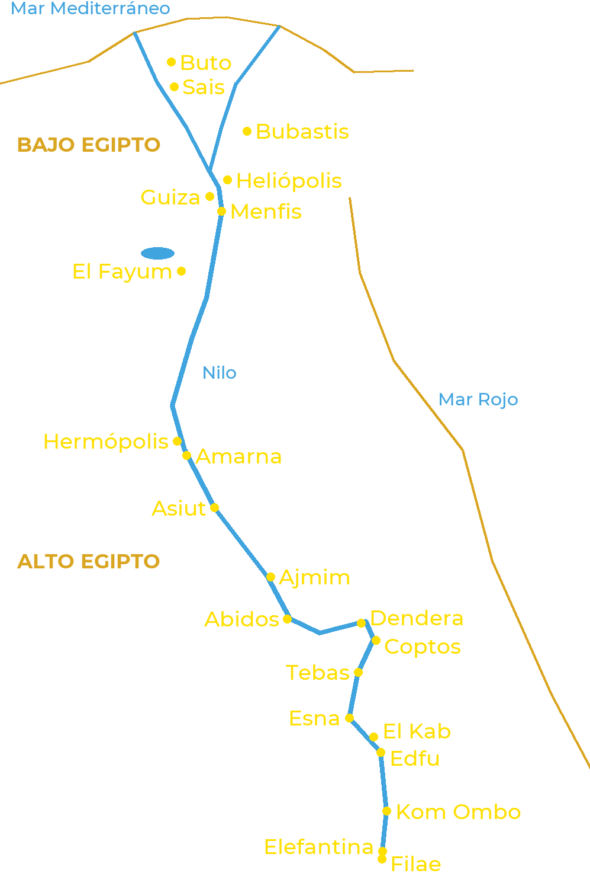

El antiguo Egipto se extendía a lo largo del Nilo, a lo largo de más de mil kilómetros. Al norte, el río
se divide en varios brazos para formar el delta: es el Bajo Egipto. Al sur se extiende el valle, el Alto
Egipto, hasta la primera catarata, en Asuán. Cada ciudad tenía sus dioses, y los mayores centros
religiosos dieron su nombre a las cosmogonías.

Los principales centros de culto, del delta a la primera catarata
Bajo Egipto
Buto: Uadyet, la diosa cobra protectora del Norte.
Sais: Neit; capital de la XXVI dinastía.
Bubastis: Bastet, cuya gran fiesta describió Heródoto.
Heliópolis: Atum y Ra; cuna de la cosmogonía más extendida.
Guiza: las grandes pirámides y la Esfinge, venerada como Harmajis.
Menfis: Ptah, Sejmet, Nefertum y el toro Apis; necrópolis de Sokar en Saqqara.
El Fayum: Sobek y sus cocodrilos sagrados.
Alto Egipto
Hermópolis: Thot y la Ogdóada.
Amarna: Atón; la capital fundada por Akenatón.
Asiut: Upuaut, «el que abre los caminos».
Ajmim y Coptos: Min, dios de la fertilidad y de las pistas del desierto.
Abidos: Osiris, cuyos misterios se celebraban allí.
Dendera: Hathor.
Tebas: Amón, Mut y Jonsu (Karnak y Luxor), Montu; necrópolis reales de la orilla occidental.
Esna: Jnum, Neit y Heka.
El Kab: Nejbet, la diosa buitre protectora del Sur.
Edfu: Horus.
Kom Ombo: Sobek y Horus el Viejo, en un templo doble.
Elefantina: Jnum, Satet y Anuket, guardianes de la crecida.
Filae: Isis, cuyo templo siguió abierto hasta el siglo VI.